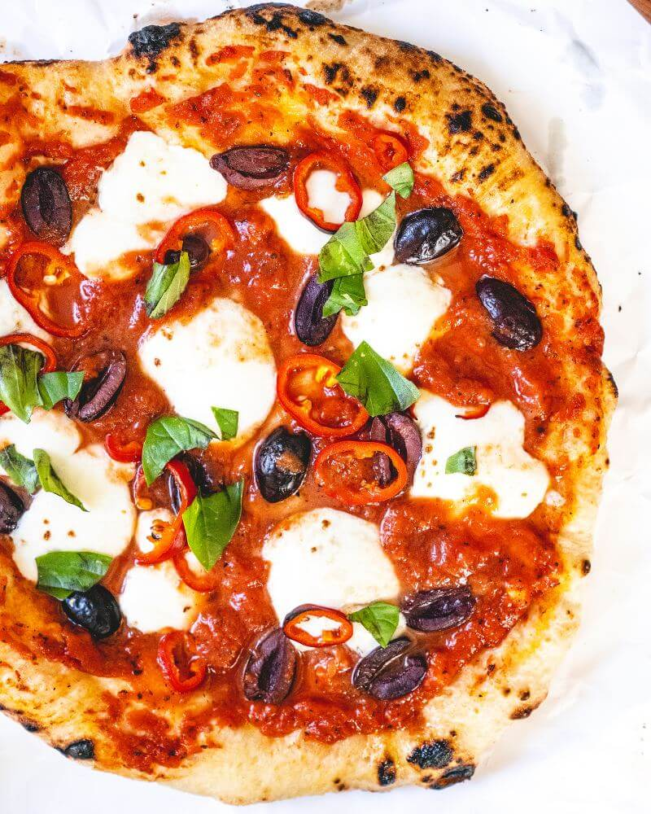

Pizza Recipe

Description
This is super tasty pizza Diavola that can be prepared by everyone at home. Below you can find all necessary ingridients:
- 1 ball Best Pizza Dough
- 1/3 cup Homamede Easy Pizza Sauce
- 4 ounces fresh mozzarella cheese
- 8 to 10 Kalamata olives
- 1 Fresno or Calabrian chilu pepper
- 2 basil leaves
- Semolina flour or cornmeal, for dusting the pizza peel
Steps
- Plece pizza stone in oven
- Prepare the Easy Pizza Sause
- Slice the mozarrela into small pieces and put on side
- Slice the olives and peppers
- When the oven is ready dust the pizza with flour cornmeal and flour
- spread sauce across the dough
- top it with mozarella, pepper and olives
- put the pizza on pizza stone and bake until cheese is melted (+-8min.)
- take it out, add basil leaves and enjoy
Back To Top
Back To Main Menu